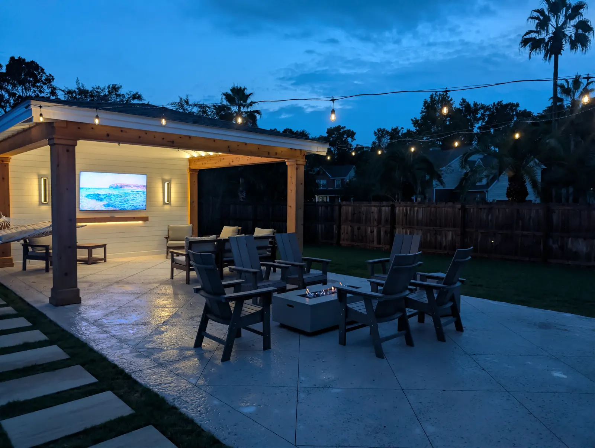
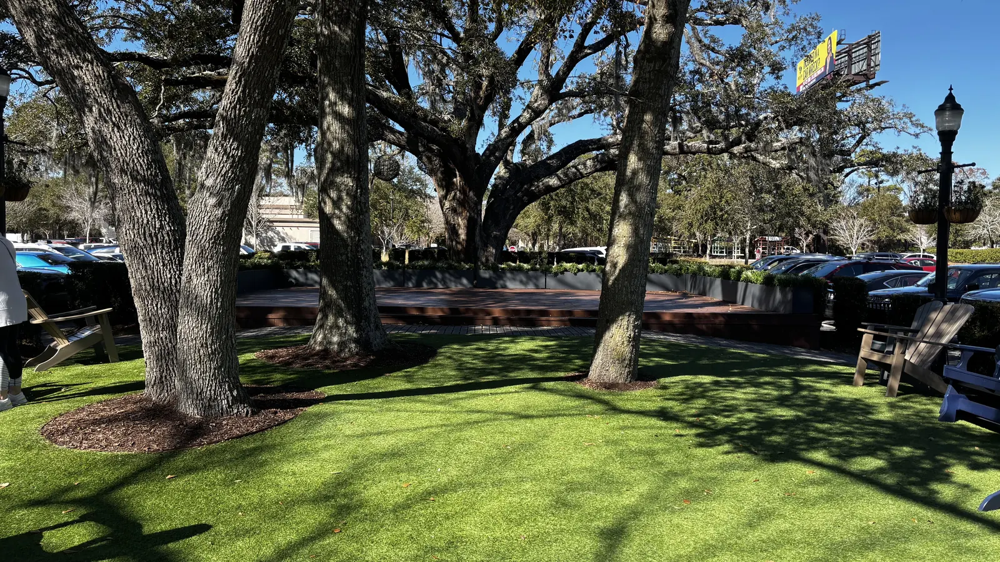

Landscaping & Outdoor Living in West Ashley, SC

Local & Family-Run
West Ashley Landscaping and Outdoor Living, for Older Yards and New Ones
Cramers Landscaping is a family company. Doug Cramer has spent more than 30 years building landscapes in the Lowcountry, and his son Zach is our licensed residential builder. Doug and Zach design every project themselves, and our own crew builds it.
West Ashley runs from 1940s neighborhoods like Byrnes Downs and Avondale, with their brick cottages and street oaks, out to newer communities like Carolina Bay and Grand Oaks. We work in both, and they call for different things.
The West Ashley Pool Cabana

This is the top end of what a pavilion can be. The shiplap TV wall makes it an outdoor living room, with speakers built in and full trim detailing.

Overhead, the vaulted ceiling is painted haint blue. It is also one of the places the owners chose to save: the ceiling is plywood, and the cabana sits on salt-void concrete rather than travertine. Neither changes the structure, and both still look excellent.
Lit for the evening


The back of the cabana holds a storage room and a bathroom, A pavilion at this level runs $80,000 and up.
Older Yards and New Construction

Older neighborhoods
Older West Ashley yards have larger trees and, often, overgrown plant beds. The trees offer beauty and good lighting options, but they can make sod challenging, and drainage and overgrowth problems are more frequent. If there is old irrigation, it often isn’t working. We try to save what we can and replace what we have to. Damaged driveways and hardscaping that need redoing are more common in older areas too. Salt-void and weathered finishes suit these houses.

Newer neighborhoods
New construction is a blank slate, but it needs more installed, because nothing is there. It tends to be more modern and minimalist, with no large trees, so it needs a pergola or pavilion for shade. Here we are usually adding patios and walkways rather than repairing them, and artificial turf earns its money where grass keeps failing. Travertine and a sleek tile are the finishes that fit a modern house. In the end the style of the specific house matters most, and we start every design from it.
Building in West Ashley
West Ashley is part of the City of Charleston, so the city’s grand tree rules apply: trees of 24 inches or more in diameter, other than pines and sweet gums, are protected and need a barricaded zone during construction. In the older neighborhoods that is most of the big oaks. We plan patios, driveways and structures around them, and the city has the final say.
Shade from those trees decides the lawn. St. Augustine is the best sod for shade under live oaks, and where grass keeps failing, artificial turf or a planted bed with a clean edge and mulch is the better answer.
Around a pool, a pool deck, a cabana with an outdoor kitchen, and a fire pit or fireplace turn a backyard into somewhere to spend the evening.
West Ashley Neighborhood by Neighborhood
Outside the historic districts, the City of Charleston allows fences up to 6 feet, and a fence permit needs your HOA’s approval where there is one. Beyond that it comes down to the neighborhood:
- Carolina Bay: fences are 4-foot black aluminum or wood pickets on any lot, with 6-foot privacy fences only on lots away from the ponds, in natural wood or an approved stain. Artificial turf is not allowed, rock isn’t allowed in beds, and the lawn is Bermuda, centipede or St. Augustine. A pool or pergola needs its own application, and floodlights have to be hooded.
- Shadowmoss: fences go in the rear only, up to 72 inches, and 48 inches near the lake or the golf course. Removing a tree over 6 inches needs approval.
- Byrnes Downs and Old Windermere have no design review for homes. Byrnes Downs is 1940s brick cottages under the live oaks its garden club planted, and Old Windermere mixes Tudor Revival, ranch and colonial homes. That is where salt-void and weathered finishes, and lighting in the old oaks, look right.
Rules as published when we checked in 2026. Guidelines change, and the board or town always has the final say, so we confirm the current rules for your property before a design is final.
Every Service We Offer, Available In West Ashley
The projects on this page are only part of what we do. We offer all of our services in West Ashley, designed by Doug and Zach and built by our own crew. From the first site visit to the final walkthrough, here’s how a project works.
- Landscaping: landscape design and installation, plants and trees, sod, artificial turf, irrigation, drainage and grading, landscape lighting, mulch and bed edging, fountains and water features
- Hardscaping: patios and pavers, concrete and driveways, retaining walls, fire pits, pool decks
- Outdoor Structures: pergolas, pavilions, outdoor kitchens, outdoor fireplaces, outdoor showers
Worth knowing before you start
- Plants and trees: Plant size is a real budget lever: buying smaller and waiting two seasons is a legitimate way to hit a number. Reliable choices here include muhly grass, wax myrtle, yaupon holly, sabal palmetto, live oak, magnolia, azalea, camellia and crape myrtle. Crape myrtles get selective thinning in late winter and are never topped. Live oaks want the crown thinned every few years so it sheds hurricane wind.
- Patios and pavers: Undersized patios are the single most common thing we are called in to correct. Natural stone looks best, lasts longest and costs most. Porcelain is cheaper than stone, strong and heat resistant.
- Drainage and grading: Drainage work on private property usually needs no permit. Tying into a public storm drain does.
- Outdoor kitchens: We usually install Blaze appliances, and you are welcome to pick your own. We leave at least two to three feet of counter beside the grill, and a built-in trash can is only worth it if it will be kept clean.
- Retaining walls: We fill the block cores with concrete and run rebar through them. Behind the wall go fabric, gravel and weep holes.
Small jobs are welcome too. There’s no minimum job size.
What Projects Typically Cost
| Pavilion or cabana | $30,000 – $90,000+ |
|---|---|
| Poured concrete | about $12 per sq ft |
| Artificial turf | from $13 per sq ft |
| Landscape lighting | about $200 a light, plus a transformer |
| Paver patio | around $18 per sq ft |
Ranges are typical, not quotes. Size, materials, site conditions and finishes move the number. You’ll get an exact price after the consultation.
Frequently Asked Questions
What does a pool cabana like the West Ashley one cost?
Pavilions run $30,000 to $90,000 or more. At $80,000 and up you get something like this one: full trim detailing, speakers, accent lighting, and a storage and bathroom area at the back.
Where can you save money on a pavilion?
On the West Ashley cabana the owners chose a plywood ceiling and salt-void concrete rather than travertine underneath. Neither changes the structure itself.
My West Ashley yard is older and overgrown. Where do you start?
With what is causing the problems. Older yards have large trees, overgrown beds, and more drainage and irrigation trouble, so we sort out the water and the overgrowth before anything new goes in.
Do you work in the newer West Ashley neighborhoods too?
Yes. New construction is a blank slate that needs more installed because nothing is there, and with no large trees it usually needs a structure for shade.
Talk to Doug or Zach About Your Yard
Tell us what you have in mind for your West Ashley property, and we’ll set up a consultation at your home.